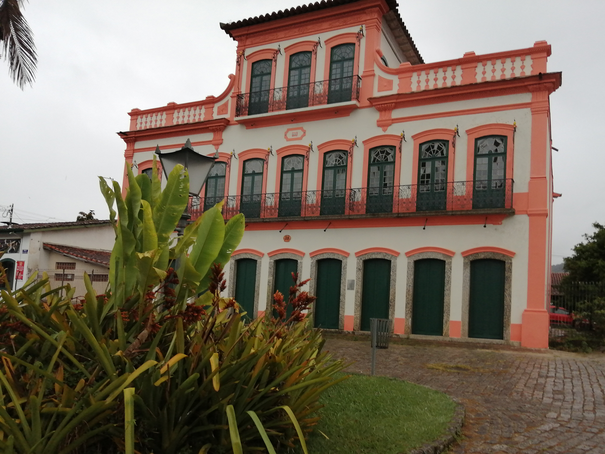
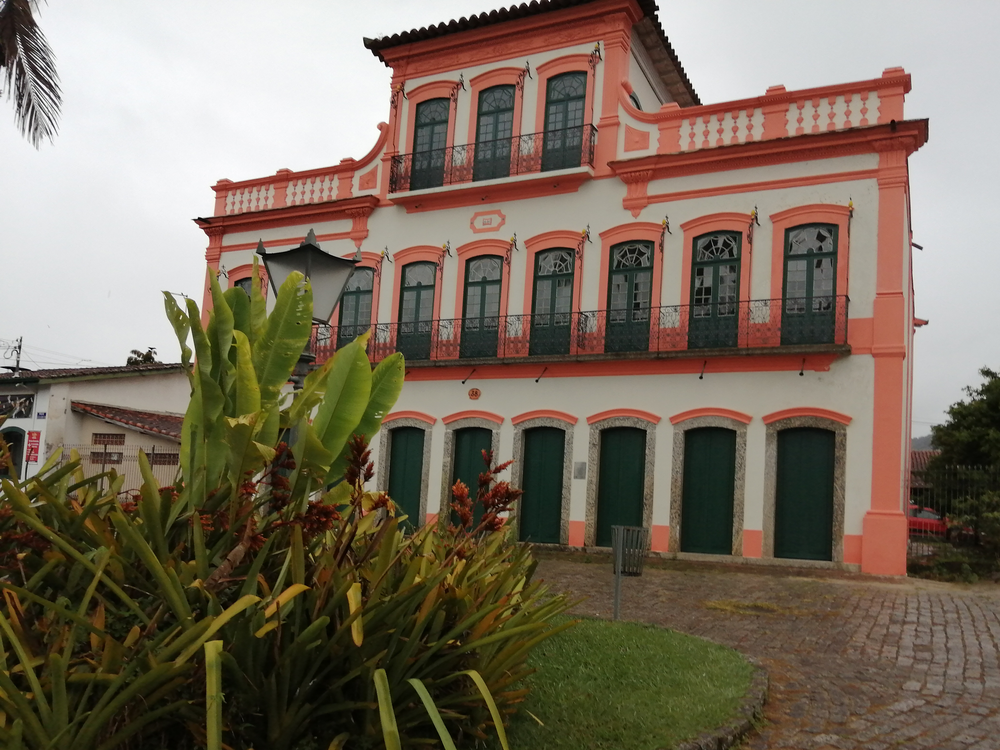

Ubatuba é um município brasileiro do estado de São Paulo. Localizado na Mesorregião do Vale do Paraíba Paulista e na Microrregião de Caraguatatuba. Trata-se de uma estância balneária cujo território ocupa uma área de 708,105km², sendo 83% coberto pelo Parque Estadual da Serra do Mar. O Censo 2022 apontou que sua população era de 92.981 habitantes, resultando em uma densidade populacional de 131,1 hab/km².[5] O município é formado pela sede e pelo distrito de Picinguaba.
No século XVI, Ubatuba fazia parte de uma região litorânea maioritariamente ocupada pelos indígenas tupinambás.
A primeira possível referência ao local aparece na obra de Hans Staden, que permaneceu cativo numa aldeia chamada Uwatibi, em Angra dos Reis. Essa aldeia tinha o mesmo nome do local da atual cidade de Ubatuba, sítio em que os índios tupinambás se reuniam com muitas canoas para expedições de guerra contra os tupiniquins e os portugueses em Burikioca (Bertioga) e Upau-Nema (São Vicente).
Tanto Hans Staden quanto outros autores europeus da época mencionam que o chefe supremo dos tupinambás era Cunhambebe e que seu território se estendia desde o Rio Juqueriquerê,
em Caraguatatuba, até o Cabo de São Tomé, no leste do estado do Rio de Janeiro, abrangendo também todo o território ao longo do Rio Paraíba do Sul. Apenas décadas mais tarde, nos relatos de José de Anchieta, é que encontramos menção à aldeia de Iperoig, que pode significar "rio do tubarão" ou "rio das perobas".[14]
Os índios tupinambás estiveram entre os primeiros índios brasileiros a sofrer o impacto dos portugueses, uma vez que foram escravizados para os engenhos de cana-de-açúcar em São Vicente. Isso motivou uma firme aliança dos tupinambás com os franceses da França Antártica, que ocuparam a região da baía de Guanabara. Essa aliança, liderada por Cunhambebe, ficou conhecida como Confederação dos Tamoios.
Em 1563, José de Anchieta partiu com Manuel da Nóbrega de São Vicente para a aldeia de Iperoig, com o objetivo de pacificar os tupinambás.
Anchieta permaneceu refém durante vários meses em Iperoig, enquanto Manuel da Nóbrega voltou a São Vicente acompanhado de Cunhambebe para acertar o tratado de paz conhecido como Paz de Iperoig.
Com a paz estabelecida com os índios tupinambás fronteiriços a São Vicente, os portugueses destruíram boa parte da nação tupinambá em conflitos na baía de Guanabara (em Uruçumirim - atual aterro do Flamengo) e em Cabo Frio, expulsando os franceses da região.
Enquanto os remanescentes tupinambás da Guanabara e de Cabo Frio se embrenharam mata adentro, abrindo espaço para a fundação do Rio de Janeiro, a população da região de Iperoig, em sua maioria, permaneceu em seus locais. Com o objetivo de assegurar a posse portuguesa da colônia, o então governador-geral empreendeu um esforço para colonizar a área. Assim, em 28 de outubro de 1637, a Aldeia de Iperoig foi elevada a vila, com o nome de Vila Nova da Exaltação à Santa Cruz do Salvador de Ubatuba, subordinada à sessão norte da Capitania de Itanhaém.
Ao longo do século XVIII, a produção agrícola cresceu e a Baía de Ubatuba se transformou no mais movimentado porto da Capitania de São Vicente.
Em 1789, entretanto, o governo de Lorena determinou que toda exportação só poderia ser feita pelo Porto de Santos, o que levou à primeira decadência econômica de Ubatuba.
O governador seguinte, Melo de Castro e Mendonça, concedeu novamente o direito ao livre comércio da vila.
Ao longo do século XIX, Ubatuba foi uma cidade rica, graças à atividade portuária. Em 1855, a cidade passou de vila a comarca. Alguns exportadores cogitaram a construção de uma ferrovia, para rivalizar com os portos de Santos e do Rio de Janeiro. Essa ferrovia foi impedida pelo governo brasileiro, através de moratória.[18] Com a gradual perda de importância para suas concorrentes melhor abastecidas, no final do século, Ubatuba mergulhava em isolamento e decadência econômica.
Em 21 de abril de 1933, o engenheiro Mariano Montesanti inaugurou sua rodovia descendo para Ubatuba a partir de Taubaté, fazendo a primeira ligação por estrada com o planalto e o vale do Paraíba. Essa estrada deu grande impulso ao turismo no litoral recortado do município, principalmente da população de Taubaté. As casas de veraneio passaram a abundar na cidade. Em 1948, Ubatuba conquistou a categoria de estância balneária.
Em 1977, foi criado o Parque Estadual da Ilha Anchieta na ilha homônima, localizada a menos de um quilômetro do litoral de Ubatuba, que passou a ser área de proteção ambiental.[19] Entre 1908 e 1955, a ilha Anchieta abrigou um presídio federal, desativado três anos depois da Rebelião da Ilha Anchieta, protagonizada em 20 de junho de 1952.
A especulação imobiliária e turística, entretanto, contribuiu para a rápida destruição do patrimônio histórico de Ubatuba. Hoje, sobram poucas mostras da ocupação antiga: um exemplo notável é o Sobradão do Porto. Hoje, Ubatuba resgata seu passado na cultura caiçara, nas ruas, nas festas de origem portuguesa, na tradição quilombola e indígena, e nos edifícios históricos restantes, revelando seu potencial como estância balneária para o turismo.
 
